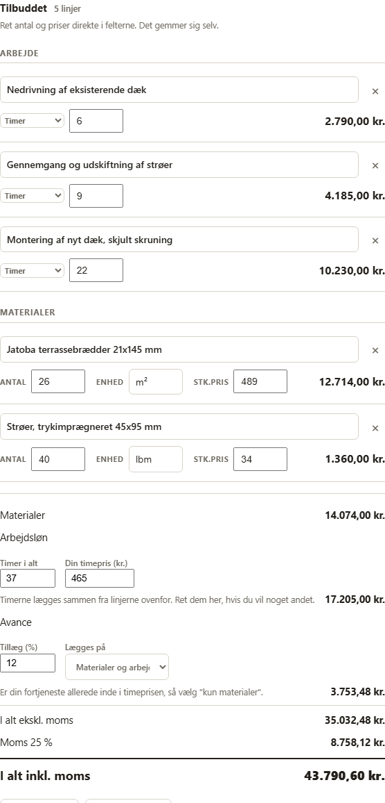
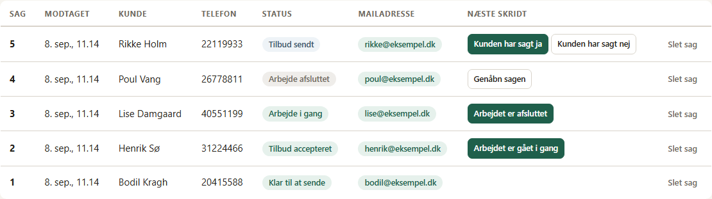

Når samtalen er slut, ligger der et udkast med opgaven, materialerne og forbeholdene. Du retter og sender.
Du beholder dit eget nummer. Ingen robot taler med dine kunder.
Vi finder ikke på et tal. Sæt dine egne, så regner den.
Så meget er den sparede tid værd, med din egen timepris.
Vi regner med, at det tager minutter at rette et udkast frem for at skrive det fra bunden. Ret det, hvis du er uenig.
Ingen ny telefon. Intet nyt nummer. Ingen robot, der taler med dine kunder.
Til dit eget nummer, det der står på bilen. Hun giver samtykke til optagelse med et tastetryk.
Helt som altid. Du fører hele samtalen selv. Ingen AI blander sig undervejs.
Samtalen skrives ud, og opgaven, materialerne og tidspunktet samles i et tilbudsudkast.
Du læser igennem, retter det der skal rettes, og sender. Intet går ud uden dit klik.
Et rigtigt tilbud fra platformen, bygget ud fra en samtale om et terrassedæk. Du retter i felterne, og totalen følger med.

Det er nemmere at love noget end at holde sig fra det. Her er, hvad systemet ikke har lov til.
Du sælger og udfører selv. Tilbuddene bliver skrevet efter fyraften, i køkkenet, når hovedet er tomt og detaljerne fra formiddagens opkald er væk. Det er dér, det hjælper.
Materialepriserne kommer fra din egen liste fra grossisten, ikke fra et gennemsnit. De vises som vejledende, aldrig som noget du har lovet kunden.
Udkastet er bygget som et dansk håndværkertilbud med de forbehold, der hører til. Ikke et mødereferat.
Er opgaven lavet, kan tilbuddet lægges over i e-conomic eller Dinero som en fakturakladde. Den bogføres aldrig af os.
Sendt, accepteret, i gang, afsluttet. Du sætter selv status, når kunden svarer, og noten om hvad hun sagde bliver stående i sagen.

Vi er ved at sætte de første håndværkervirksomheder op. Er du tømrer, tagdækker, elektriker, VVS'er eller murer med et par mand i firmaet, så skriv dit nummer. Så ringer vi og viser det på en af dine egne samtaler.
Vil du hellere skrive? kontakt@telemakker.dk